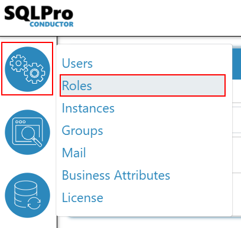
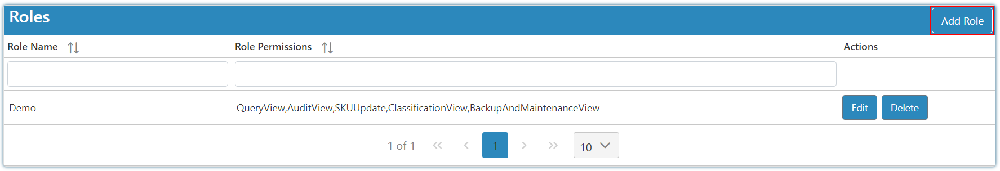

Introduction
Conductor4SQL has three internal roles being User, Admin, and Super Admin that cannot be changed or edited. You can create custom roles that will dictate what can be viewed and updated by a user via the assigned role.
Note
You need to be a Super Admin, Admin, or have a role that has the permissions AdminUpdateRole in order to add new custom roles.
The first step is to select the settings Icon and choose Roles.

To create a role click on the Add Role.

Note
Only permissions that your current role has access to will be available in the permissions dropdown as you can't assign permissions that your role does not have to new roles.